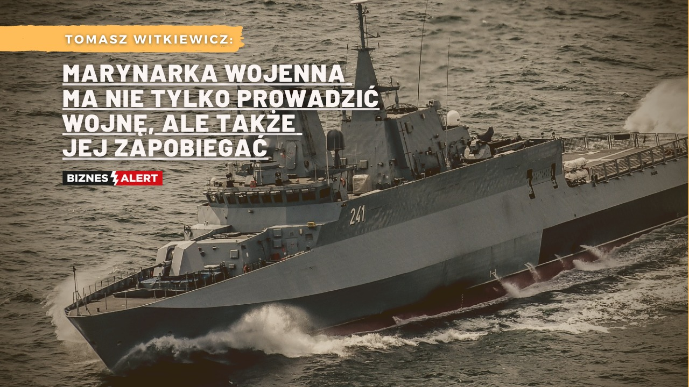

Powrót do strony głównej
Krótka historia polskiej marynarki wojennej (podczas II wś):
Podczas kampanii wrześniowej w 1939 polska Obrona Wybrzeża nie miała
szans nawiązania równorzędnej walki z przeważającą armią niemiecką.
Pierwsze działania wojenne Polskiej Marynarki Wojennej (PMW) miały
miejsce w 1939 roku w czasie obrony wybrzeża. Trzy niszczyciele
zostały wycofane z Morza Bałtyckiego do Wielkiej Brytanii jeszcze
przed wybuchem wojny. Podczas II wojny światowej w skład PMW
wchodziło łącznie 27 okrętów (dwa krążowniki, dziewięć niszczycieli,
pięć okrętów podwodnych i 11 kutrów torpedowych), które przebyły w
sumie 1,2 mln mil morskich, eskortowały 787 konwojów. Okręty PMW
przeprowadziły 1162 patroli oraz operacji wojskowych, zatopiły 12
okrętów nieprzyjaciela (w tym 5 okrętów podwodnych), 41 statków
handlowych, uszkodziły 24 okręty (w tym osiem okrętów podwodnych) i
zestrzeliły 20 samolotów. 450 marynarzy z ponad czterech tysięcy
służących w marynarce straciło swoje życie podczas walki. Większość
okrętów została zatopiona, niektórym udało się przedostać do
Wielkiej Brytanii, a pozostałe internowały się w Szwecji. Pomimo że
na Bałtyku pozostawał już tylko ORP Orzeł, który jednak działał po
ucieczce z Tallinna i skonfiskowaniu map i ksiąg kodowych z dala od
lądu, marynarze broniący Półwyspu Helskiego poddali się 2
października jako jeden z ostatnich punktów obrony w kraju.
